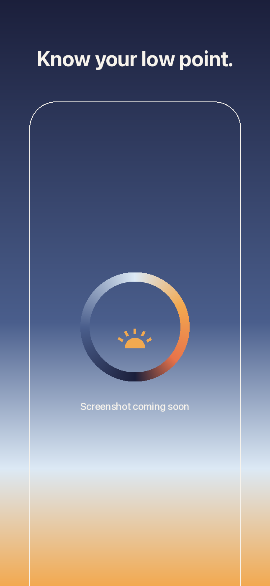
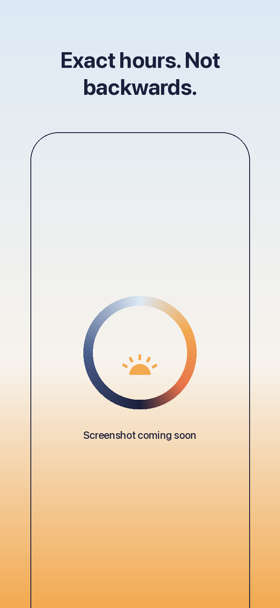
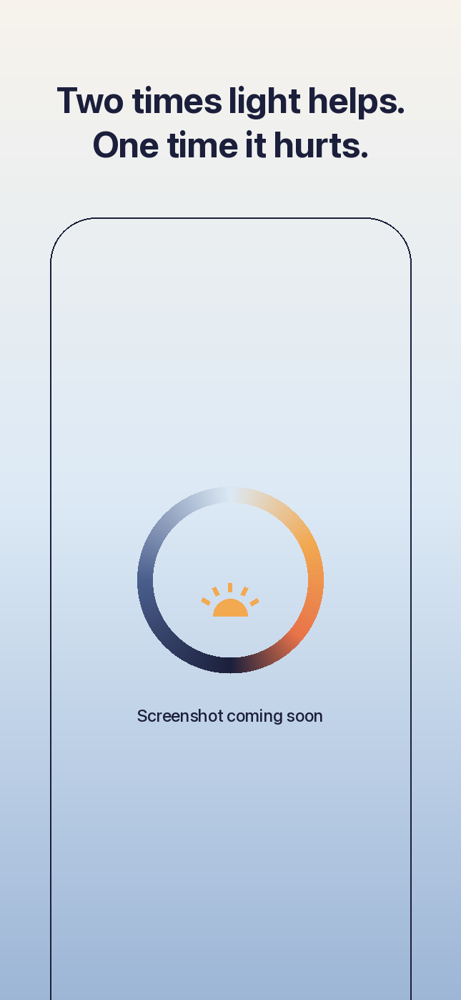
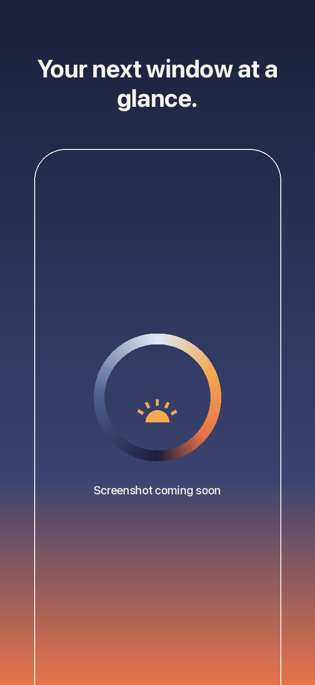
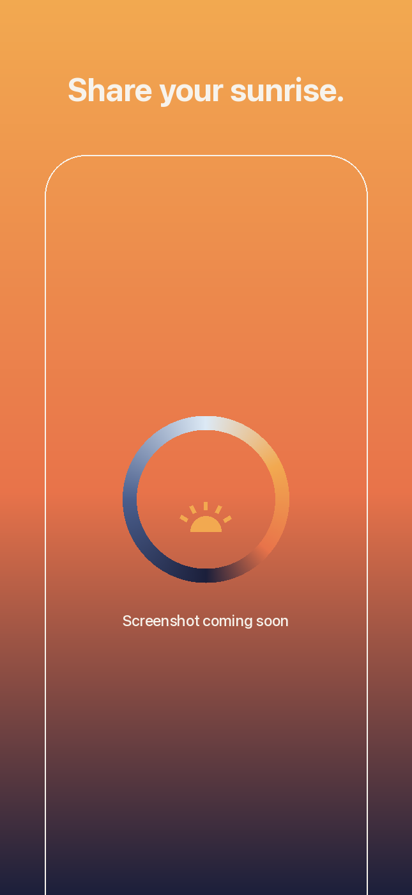

For trips
Enter your destination and arrival time. Sunsy plans five days.
- Two days before you fly: wake 30 to 45 minutes earlier or later.
- Three arrival days: exact blocks in local time.
- A reminder at the start of each block, if you want one.
Sunsy: Jet Lag Planner
Most travellers get jet lag light backwards. Sunsy gives the exact hours to seek and avoid light on every arrival day. Free. No account. Data Not Collected.
San Francisco to London, arrival day 1
Times in London time, for someone who usually wakes at 07:00. Sunsy computes times. It gives no medical advice.
Your body clock has a low point, about two hours before you usually wake up. Light in the hours after it moves your clock earlier. Light in the hours before it moves your clock later. Sunsy finds your low point from your usual wake time and works out the rest.
Enter your destination and arrival time. Sunsy plans five days.
Between trips, the two times light helps and the one time it hurts.
No account. No analytics. No tracking. Your wake time and trips stay on your phone, and sun times are computed on the device.
Lock screen and home screen widgets show your next window. Share your sunrise or sunset with your low point on the photo.





Built on published circadian research: the timing of the temperature minimum (Lack et al., 2009) and the rate the plan moves on arrival (Eastman and Burgess, 2009).
Download on the App Store